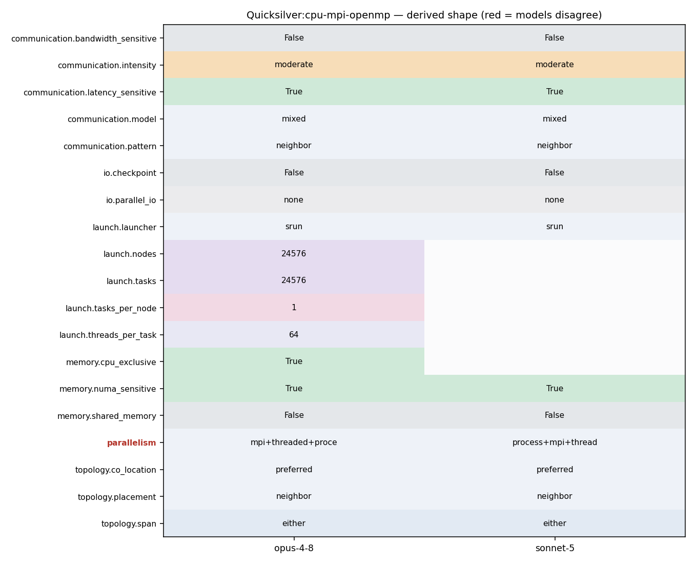

srun -N24576 -n24576 qs -i Coral2_P1.inp ... -n 4026531840 (OMP_NUM_THREADS=64)
srun -N1024 -n1024 ./qs -i Coral2_P1.inp -X 256 -Y 128 -Z 128 -I 16 -J 8 -K 8 -n 167772160
286 287 //Test for done - blocking on all MPI ranks 288 NVTX_Range doneRange("cycleTracking_Test_Done_New"); 289 done = monteCarlo->particle_buffer->Test_Done_New( new_test_done_method ); 290 doneRange.endRange(); 291 292 MC_FASTTIMER_STOP(MC_Fast_Timer::cycleTracking_MPI);
77 { qs_assert(MPI_Waitall(count, array_of_requests, array_of_statuses) == MPI_SUCCESS); } 78 void mpiAllreduce ( void *sendbuf, void *recvbuf, int count, MPI_Datatype datatype, MPI_Op operation, MPI_Comm comm ) 79 { qs_assert(MPI_Allreduce(sendbuf, recvbuf, count, datatype, operation, comm) == MPI_SUCCESS); } 80 void mpiIAllreduce( void *sendbuf, void *recvbuf, int count, MPI_Datatype datatype, MPI_Op operation, MPI_Comm comm, MPI_Request *request) 81 #ifdef HAVE_ASYNC_MPI 82 { qs_assert(MPI_Iallreduce(sendbuf, recvbuf, count, datatype, operation, comm, request) == MPI_SUCCESS); } 83 #else
43 tal.push_back(_balanceTask[0]._numSegments); 44 vector<uint64_t> sum(tal.size()); 45 46 mpiAllreduce(&tal[0], &sum[0], tal.size(), MPI_UINT64_T, MPI_SUM, monteCarlo->processor_info->comm_mc_world); 47 48 int index = 0; 49 _balanceTask[0]._absorb = sum[index++]; 50 _balanceTask[0]._census = sum[index++]; 51 _balanceTask[0]._escape = sum[index++]; 52 _balanceTask[0]._collision = sum[index++]; 53 _balanceTask[0]._end = sum[index++]; 54 _balanceTask[0]._fission = sum[index++]; 55 _balanceTask[0]._produce = sum[index++]; 56 _balanceTask[0]._scatter = sum[index++]; 57 _balanceTask[0]._start = sum[index++]; 58 _balanceTask[0]._source = sum[index++]; 59 _balanceTask[0]._rr = sum[index++]; 60 _balanceTask[0]._split = sum[index++]; 61 _balanceTask[0]._numSegments = sum[index++]; 62 63 PrintSummary(monteCarlo); 64 65 _balanceCumulative.Add(_balanceTask[0]); 66 67 uint64_t newStart = _balanceTask[0]._end; 68 69 for ( auto balanceIter = 0; balanceIter < _balanceTask.size(); balanceIter++) 70 { 71 _balanceTask[balanceIter].Reset(); 72 } 73 _balanceTask[0]._start = newStart; 74 75 for (int domainIndex = 0; domainIndex < _scalarFluxDomain.size(); domainIndex++) 76 { 77 //Sum Cell Tally Replications 78 for (int replication_index = 1; replication_index < _num_flux_replications; replication_index++) 79 { 80 _cellTallyDomain[domainIndex]._task[0].Add( _cellTallyDomain[domainIndex]._task[replication_index]); 81 _cellTallyDomain[domainIndex]._task[replication_index].Reset(); 82 } 83
240 241 MC_FASTTIMER_STOP(MC_Fast_Timer::cycleTracking_Kernel); 242 243 MC_FASTTIMER_START(MC_Fast_Timer::cycleTracking_MPI); 244 245 // Next, communicate particles that have crossed onto 246 // other MPI ranks.
284 collapseRange.endRange(); 285 286 287 //Test for done - blocking on all MPI ranks 288 NVTX_Range doneRange("cycleTracking_Test_Done_New"); 289 done = monteCarlo->particle_buffer->Test_Done_New( new_test_done_method ); 290 doneRange.endRange();
284 collapseRange.endRange(); 285 286 287 //Test for done - blocking on all MPI ranks 288 NVTX_Range doneRange("cycleTracking_Test_Done_New"); 289 done = monteCarlo->particle_buffer->Test_Done_New( new_test_done_method ); 290 doneRange.endRange(); 291 292 MC_FASTTIMER_STOP(MC_Fast_Timer::cycleTracking_MPI); 293 294 } // while not done: Test_Done_New() 295 296 // Everything should be done normally. 297 done = monteCarlo->particle_buffer->Test_Done_New( MC_New_Test_Done_Method::Blocking );
12 OpenMP and MPI are used for parallelization. A GPU version is 13 available. Unified memory is assumed. 14 15 Performance of Quicksilver is likely to be dominated by latency bound 16 table look-ups, a highly branchy/divergent code path, and poor 17 vectorization potential. 18
286 287 //Test for done - blocking on all MPI ranks 288 NVTX_Range doneRange("cycleTracking_Test_Done_New"); 289 done = monteCarlo->particle_buffer->Test_Done_New( new_test_done_method ); 290 doneRange.endRange(); 291 292 MC_FASTTIMER_STOP(MC_Fast_Timer::cycleTracking_MPI);
246 // other MPI ranks. 247 NVTX_Range cleanAndComm("cycleTracking_clean_and_comm"); 248 249 SendQueue &sendQueue = *(my_particle_vault.getSendQueue()); 250 monteCarlo->particle_buffer->Allocate_Send_Buffer( sendQueue ); 251 252 //Move particles from send queue to the send buffers 253 for ( int index = 0; index < sendQueue.size(); index++ ) 254 { 255 sendQueueTuple& sendQueueT = sendQueue.getTuple( index ); 256 MC_Base_Particle mcb_particle; 257 258 processingVault->getBaseParticleComm( mcb_particle, sendQueueT._particleIndex ); 259 260 int buffer = monteCarlo->particle_buffer->Choose_Buffer(sendQueueT._neighbor ); 261 monteCarlo->particle_buffer->Buffer_Particle(mcb_particle, buffer ); 262 } 263 264 monteCarlo->particle_buffer->Send_Particle_Buffers(); // post MPI sends 265 266 processingVault->clear(); //remove the invalid particles 267 sendQueue.clear(); 268 269 // Move particles in "extra" vaults into the regular vaults. 270 my_particle_vault.cleanExtraVaults();
261 monteCarlo->particle_buffer->Buffer_Particle(mcb_particle, buffer ); 262 } 263 264 monteCarlo->particle_buffer->Send_Particle_Buffers(); // post MPI sends 265 266 processingVault->clear(); //remove the invalid particles 267 sendQueue.clear();
286 287 //Test for done - blocking on all MPI ranks 288 NVTX_Range doneRange("cycleTracking_Test_Done_New"); 289 done = monteCarlo->particle_buffer->Test_Done_New( new_test_done_method ); 290 doneRange.endRange(); 291 292 MC_FASTTIMER_STOP(MC_Fast_Timer::cycleTracking_MPI);
76 void mpiWaitall( int count, MPI_Request *array_of_requests, MPI_Status *array_of_statuses ) 77 { qs_assert(MPI_Waitall(count, array_of_requests, array_of_statuses) == MPI_SUCCESS); } 78 void mpiAllreduce ( void *sendbuf, void *recvbuf, int count, MPI_Datatype datatype, MPI_Op operation, MPI_Comm comm ) 79 { qs_assert(MPI_Allreduce(sendbuf, recvbuf, count, datatype, operation, comm) == MPI_SUCCESS); } 80 void mpiIAllreduce( void *sendbuf, void *recvbuf, int count, MPI_Datatype datatype, MPI_Op operation, MPI_Comm comm, MPI_Request *request) 81 #ifdef HAVE_ASYNC_MPI 82 { qs_assert(MPI_Iallreduce(sendbuf, recvbuf, count, datatype, operation, comm, request) == MPI_SUCCESS); }
246 // other MPI ranks. 247 NVTX_Range cleanAndComm("cycleTracking_clean_and_comm"); 248 249 SendQueue &sendQueue = *(my_particle_vault.getSendQueue()); 250 monteCarlo->particle_buffer->Allocate_Send_Buffer( sendQueue ); 251 252 //Move particles from send queue to the send buffers 253 for ( int index = 0; index < sendQueue.size(); index++ ) 254 { 255 sendQueueTuple& sendQueueT = sendQueue.getTuple( index ); 256 MC_Base_Particle mcb_particle; 257 258 processingVault->getBaseParticleComm( mcb_particle, sendQueueT._particleIndex ); 259 260 int buffer = monteCarlo->particle_buffer->Choose_Buffer(sendQueueT._neighbor ); 261 monteCarlo->particle_buffer->Buffer_Particle(mcb_particle, buffer ); 262 } 263 264 monteCarlo->particle_buffer->Send_Particle_Buffers(); // post MPI sends 265 266 processingVault->clear(); //remove the invalid particles 267 sendQueue.clear(); 268 269 // Move particles in "extra" vaults into the regular vaults. 270 my_particle_vault.cleanExtraVaults();
43 tal.push_back(_balanceTask[0]._numSegments); 44 vector<uint64_t> sum(tal.size()); 45 46 mpiAllreduce(&tal[0], &sum[0], tal.size(), MPI_UINT64_T, MPI_SUM, monteCarlo->processor_info->comm_mc_world); 47 48 int index = 0; 49 _balanceTask[0]._absorb = sum[index++];
38 } 39 else 40 { 41 mpiAllreduce(&localNumParticles, &globalNumParticles, 1, MPI_UINT64_T, MPI_SUM, MPI_COMM_WORLD); 42 } 43 44 Balance & taskBalance = monteCarlo->_tallies->_balanceTask[0];
242 243 MC_FASTTIMER_START(MC_Fast_Timer::cycleTracking_MPI); 244 245 // Next, communicate particles that have crossed onto 246 // other MPI ranks. 247 NVTX_Range cleanAndComm("cycleTracking_clean_and_comm"); 248
257 258 processingVault->getBaseParticleComm( mcb_particle, sendQueueT._particleIndex ); 259 260 int buffer = monteCarlo->particle_buffer->Choose_Buffer(sendQueueT._neighbor ); 261 monteCarlo->particle_buffer->Buffer_Particle(mcb_particle, buffer ); 262 } 263
270 my_particle_vault.cleanExtraVaults(); 271 272 // receive any particles that have arrived from other ranks 273 monteCarlo->particle_buffer->Receive_Particle_Buffers( fill_vault ); 274 275 MC_FASTTIMER_STOP(MC_Fast_Timer::cycleTracking_MPI); 276
4 #include "QS_Vector.hh" 5 #include "DeclareMacro.hh" 6 7 //Tuple to record which particles need to be sent to which neighbor process during tracking 8 struct sendQueueTuple 9 { 10 int _neighbor; 11 int _particleIndex; 12 }; 13 14 class SendQueue
255 sendQueueTuple& sendQueueT = sendQueue.getTuple( index ); 256 MC_Base_Particle mcb_particle; 257 258 processingVault->getBaseParticleComm( mcb_particle, sendQueueT._particleIndex ); 259 260 int buffer = monteCarlo->particle_buffer->Choose_Buffer(sendQueueT._neighbor ); 261 monteCarlo->particle_buffer->Buffer_Particle(mcb_particle, buffer ); 262 } 263 264 monteCarlo->particle_buffer->Send_Particle_Buffers(); // post MPI sends 265 266 processingVault->clear(); //remove the invalid particles 267 sendQueue.clear(); 268 269 // Move particles in "extra" vaults into the regular vaults. 270 my_particle_vault.cleanExtraVaults();
251 } 252 253 vector<FaceInfo> faceInfo(6); 254 grid.getFaceNbrGids(iCellGid, faceNbr); 255 for (unsigned ii=0; ii<6; ++ii) 256 { 257 auto here = partition.findCell(faceNbr[ii]); 258 qs_assert(here != partition.end()); 259 const CellInfo& jCellInfo = here->second; 260 faceInfo[ii]._event = MC_Subfacet_Adjacency_Event::Adjacency_Undefined; 261 faceInfo[ii]._cellInfo = jCellInfo; 262 faceInfo[ii]._nbrIndex = nbrDomainIndex[jCellInfo._domainGid]; 263 if (faceNbr[ii] == iCellGid) 264 faceInfo[ii]._event = boundaryCondition[ii]; 265 else 266 {
59 documentation on the available command line switches. Documentation 60 of the input file parameters is in preparation. 61 62 Quicksilver also has the property that the output of every run is a 63 valid input file. Hence you can repeat any run for which you have the 64 output file by using that output as an input file. 65
1 #include "utils.hh" 2 #include <cstdio> 3 #include "qs_assert.hh" 4 #include "utilsMpi.hh"
261 monteCarlo->particle_buffer->Buffer_Particle(mcb_particle, buffer ); 262 } 263 264 monteCarlo->particle_buffer->Send_Particle_Buffers(); // post MPI sends 265 266 processingVault->clear(); //remove the invalid particles 267 sendQueue.clear();
11 12 QS=../../../src/qs 13 14 srun -N24576 -n24576 $QS -i Coral2_P1.inp -X 768 -Y 512 -Z 256 -x 768 -y 512 -z 256 -I 48 -J 32 -K 16 -n 4026531840 > p1n24576t64 15 srun -N16384 -n16384 $QS -i Coral2_P1.inp -X 512 -Y 512 -Z 256 -x 512 -y 512 -z 256 -I 32 -J 32 -K 16 -n 2684354560 > p1n16384t64 16 srun -N8192 -n8192 $QS -i Coral2_P1.inp -X 512 -Y 256 -Z 256 -x 512 -y 256 -z 256 -I 32 -J 16 -K 16 -n 1342117280 > p1n08192t64 17 srun -N4096 -n4096 $QS -i Coral2_P1.inp -X 256 -Y 256 -Z 256 -x 256 -y 256 -z 256 -I 16 -J 16 -K 16 -n 671088640 > p1n04092t64
11 12 QS=../../src/qs 13 14 srun -N1 -n1 $QS -i CTS2.inp -X 16 -Y 16 -Z 16 -x 16 -y 16 -z 16 -I 1 -J 1 -K 1 -n 40960 > CTS2_01.out 15 srun -N1 -n2 $QS -i CTS2.inp -X 32 -Y 16 -Z 16 -x 32 -y 16 -z 16 -I 2 -J 1 -K 1 -n 81920 > CTS2_02.out 16 srun -N1 -n4 $QS -i CTS2.inp -X 32 -Y 32 -Z 16 -x 32 -y 32 -z 16 -I 2 -J 2 -K 1 -n 163840 > CTS2_04.out 17 srun -N1 -n8 $QS -i CTS2.inp -X 32 -Y 32 -Z 32 -x 32 -y 32 -z 32 -I 2 -J 2 -K 2 -n 327680 > CTS2_08.out
11 12 QS=../../../src/qs 13 14 srun -N24576 -n24576 $QS -i Coral2_P1.inp -X 768 -Y 512 -Z 256 -x 768 -y 512 -z 256 -I 48 -J 32 -K 16 -n 4026531840 > p1n24576t64 15 srun -N16384 -n16384 $QS -i Coral2_P1.inp -X 512 -Y 512 -Z 256 -x 512 -y 512 -z 256 -I 32 -J 32 -K 16 -n 2684354560 > p1n16384t64 16 srun -N8192 -n8192 $QS -i Coral2_P1.inp -X 512 -Y 256 -Z 256 -x 512 -y 256 -z 256 -I 32 -J 16 -K 16 -n 1342117280 > p1n08192t64 17 srun -N4096 -n4096 $QS -i Coral2_P1.inp -X 256 -Y 256 -Z 256 -x 256 -y 256 -z 256 -I 16 -J 16 -K 16 -n 671088640 > p1n04092t64 18 srun -N2048 -n2048 $QS -i Coral2_P1.inp -X 256 -Y 256 -Z 128 -x 256 -y 256 -z 128 -I 16 -J 16 -K 8 -n 335544320 > p1n02048t64 19 srun -N1024 -n1024 $QS -i Coral2_P1.inp -X 256 -Y 128 -Z 128 -x 256 -y 128 -z 128 -I 16 -J 8 -K 8 -n 167772160 > p1n01024t64 20 srun -N512 -n512 $QS -i Coral2_P1.inp -X 128 -Y 128 -Z 128 -x 128 -y 128 -z 128 -I 8 -J 8 -K 8 -n 83886080 > p1n00512t64 21 srun -N256 -n256 $QS -i Coral2_P1.inp -X 128 -Y 128 -Z 64 -x 128 -y 128 -z 64 -I 8 -J 8 -K 4 -n 41943040 > p1n00256t64 22 srun -N128 -n128 $QS -i Coral2_P1.inp -X 128 -Y 64 -Z 64 -x 128 -y 64 -z 64 -I 8 -J 4 -K 4 -n 20971520 > p1n00128t64 23 srun -N64 -n64 $QS -i Coral2_P1.inp -X 64 -Y 64 -Z 64 -x 64 -y 64 -z 64 -I 4 -J 4 -K 4 -n 10485760 > p1n00064t64 24 srun -N32 -n32 $QS -i Coral2_P1.inp -X 64 -Y 64 -Z 32 -x 64 -y 64 -z 32 -I 4 -J 4 -K 2 -n 5242880 > p1n00032t64 25 srun -N16 -n16 $QS -i Coral2_P1.inp -X 64 -Y 32 -Z 32 -x 64 -y 32 -z 32 -I 4 -J 2 -K 2 -n 2621440 > p1n00016t64 26 srun -N8 -n8 $QS -i Coral2_P1.inp -X 32 -Y 32 -Z 32 -x 32 -y 32 -z 32 -I 2 -J 2 -K 2 -n 1310720 > p1n00008t64 27 srun -N4 -n4 $QS -i Coral2_P1.inp -X 32 -Y 32 -Z 16 -x 32 -y 32 -z 16 -I 2 -J 2 -K 1 -n 655360 > p1n00004t64 28 srun -N2 -n2 $QS -i Coral2_P1.inp -X 32 -Y 16 -Z 16 -x 32 -y 16 -z 16 -I 2 -J 1 -K 1 -n 327680 > p1n00002t64 29 srun -N1 -n1 $QS -i Coral2_P1.inp -X 16 -Y 16 -Z 16 -x 16 -y 16 -z 16 -I 1 -J 1 -K 1 -n 163840 > p1n00001t64
20 following is an example of an MPI run with 4 mpi processes and 1,000,000 21 particles. 22 23 srun -n4 ./qs --nParticles=1000000 24 25 26 -------------------------------------------------------------------------------
11 12 QS=../../../src/qs 13 14 srun -N24576 -n24576 $QS -i Coral2_P1.inp -X 768 -Y 512 -Z 256 -x 768 -y 512 -z 256 -I 48 -J 32 -K 16 -n 4026531840 > p1n24576t64 15 srun -N16384 -n16384 $QS -i Coral2_P1.inp -X 512 -Y 512 -Z 256 -x 512 -y 512 -z 256 -I 32 -J 32 -K 16 -n 2684354560 > p1n16384t64 16 srun -N8192 -n8192 $QS -i Coral2_P1.inp -X 512 -Y 256 -Z 256 -x 512 -y 256 -z 256 -I 32 -J 16 -K 16 -n 1342117280 > p1n08192t64 17 srun -N4096 -n4096 $QS -i Coral2_P1.inp -X 256 -Y 256 -Z 256 -x 256 -y 256 -z 256 -I 16 -J 16 -K 16 -n 671088640 > p1n04092t64
11 12 QS=../../../src/qs 13 14 srun -N24576 -n24576 $QS -i Coral2_P1.inp -X 768 -Y 512 -Z 256 -x 768 -y 512 -z 256 -I 48 -J 32 -K 16 -n 4026531840 > p1n24576t64 15 srun -N16384 -n16384 $QS -i Coral2_P1.inp -X 512 -Y 512 -Z 256 -x 512 -y 512 -z 256 -I 32 -J 32 -K 16 -n 2684354560 > p1n16384t64 16 srun -N8192 -n8192 $QS -i Coral2_P1.inp -X 512 -Y 256 -Z 256 -x 512 -y 256 -z 256 -I 32 -J 16 -K 16 -n 1342117280 > p1n08192t64 17 srun -N4096 -n4096 $QS -i Coral2_P1.inp -X 256 -Y 256 -Z 256 -x 256 -y 256 -z 256 -I 16 -J 16 -K 16 -n 671088640 > p1n04092t64
2 3 #Problem 1: 4 5 # 1 rank per node 6 # 64 threads per rank 7 # 4096 mesh elements per node 8 # 40 particles per mesh element -> 163840 particles per node
7 # 4096 mesh elements per node 8 # 40 particles per mesh element -> 163840 particles per node 9 10 export OMP_NUM_THREADS=64 11 12 QS=../../../src/qs 13
12 13 # 32 MPI x 1 Thread - Thread Funneled 14 export OMP_NUM_THREADS=1 15 srun -n 32 --distribution=cyclic --mpibind ./qs \ 16 --lx=400 --ly=400 --lz=200 --nx=20 --ny=20 --nz=20 --xDom=4 --yDom=4 --zDom=2 --nParticles=4000000 \ 17 -i Input/homogeneousProblem_v5_ts.inp 2>&1 | tee qs.rzgenie.Node0001.n0032.t0001-ts.out 18
12 13 # 32 MPI x 1 Thread - Thread Funneled 14 export OMP_NUM_THREADS=1 15 srun -n 32 --distribution=cyclic --mpibind ./qs \ 16 --lx=400 --ly=400 --lz=200 --nx=20 --ny=20 --nz=20 --xDom=4 --yDom=4 --zDom=2 --nParticles=4000000 \ 17 -i Input/homogeneousProblem_v5_ts.inp 2>&1 | tee qs.rzgenie.Node0001.n0032.t0001-ts.out 18
72 # #################### 73 74 export MPICH_MAX_THREAD_SAFETY=funneled 75 export OMP_PLACES=threads 76 77 export OMP_NUM_THREADS=2 78 time aprun -r 4 -n 128 -d 2 -j 2 -cc depth ./qs \
3 # Or put them in batch script 4 # 5 6 export -n KMP_AFFINITY 7 export OMP_PROC_BIND=FALSE 8 9 # #################### 10 # Thread Funneled Runs 11 # #################### 12 13 # 32 MPI x 1 Thread - Thread Funneled 14 export OMP_NUM_THREADS=1 15 srun -n 32 --distribution=cyclic --mpibind ./qs \ 16 --lx=400 --ly=400 --lz=200 --nx=20 --ny=20 --nz=20 --xDom=4 --yDom=4 --zDom=2 --nParticles=4000000 \ 17 -i Input/homogeneousProblem_v5_ts.inp 2>&1 | tee qs.rzgenie.Node0001.n0032.t0001-ts.out 18
23 cd /users/sdawson/Quicksilver-2017-Apr-19-12-45-27 24 25 export MPICH_MAX_THREAD_SAFETY=funneled 26 export OMP_PLACES=cores 27 28 # (Per Node) 64 MPI x 1 Threads - Thread Funneled 29 #export OMP_NUM_THREADS=1 30 #time aprun -r 4 -n 64 -d 1 -j 1 -cc depth ./qs \ 31 # --lx=400 --ly=400 --lz=400 --nx=20 --ny=20 --nz=20 --xDom=4 --yDom=4 --zDom=4 --nParticles=2000000 \ 32 # -i Input/homogeneousProblem_v5_ts.inp 2>&1 | tee qs.trinity.Node0001.n0064.d001.j01-ts.out 33
284 285 CommObject* comm = 0; 286 if (nRanks == 1) 287 comm = new SharedMemoryCommObject(partition); 288 else if (nRanks > 1 && nDomainsPerRank == 1) 289 comm = new MpiCommObject(MPI_COMM_WORLD, ddc); 290 else
44 void SharedMemoryCommObject::exchange(vector<FacetPair> sendBuf, 45 vector<FacetPair>& recvBuf) 46 { 47 // This type of exchange should never occur in SharedMemory spaces. 48 qs_assert(false); 49 } 50
9 particle transport problem. Quicksilver attempts to replicate the 10 memory access patterns, communication patterns, and the branching or 11 divergence of Mercury for problems using multigroup cross sections. 12 OpenMP and MPI are used for parallelization. A GPU version is 13 available. Unified memory is assumed. 14 15 Performance of Quicksilver is likely to be dominated by latency bound
224 } 225 break; 226 227 case cpu: 228 #include "mc_omp_parallel_for_schedule_static.hh" 229 for ( int particle_index = 0; particle_index < numParticles; particle_index++ ) 230 {
20 {"MPI_THREAD_SINGLE","MPI_THREAD_FUNNELED","MPI_THREAD_SERIALIZED","MPI_THREAD_MULTIPLE"}; 21 int provided, required = MPI_THREAD_FUNNELED; 22 23 int err = MPI_Init_thread(argc, argv, required, &provided); 24 qs_assert(err == MPI_SUCCESS); 25 26 int rank = -1;
30 # enable or disable various code features such as MPI, OpenMP, etc. 31 # The following pre-processor DEFINES are recognized: 32 # 33 # -DHAVE_MPI Define HAVE_MPI to enable MPI feartures in 34 # Quicksilver. If this is not defined, the MPI 35 # functions will be replaced with stub implmentations 36 # and the code will run on a single "rank". 37 # 38 # -DHAVE_ASYNC_MPI Define this if your MPI has support for non-blocking 39 # collectives. (Quicksilver will use MPI_Iallreduce 40 # in the test-for-done algorithm.) 41 # 42 # -DHAVE_CUDA Define this to enable the Cuda build. 43 # 44 # -DHAVE_HIP Define this to enable the HIP build. Quicksilver assumes 45 # that HIP is targeting AMD GPUs. 46 # 47 # -DHAVE_OPENMP Use this define to generate a code which uses OpenMP 48 # threads. It will also be necessary to add the appropriate 49 # compiler flags to CXXFLAGS and LDFLAGS, which vary 50 # by compiler, such as '-qopenmp -pthread' for Intel, or 51 # '-fopenmp' for Gnu. Defining HAVE_OPENMP will use 52 # only features in OpenMP 3.x. 53 # 54 # -DHAVE_OPENMP_TARGET 55 # Use this define to generate OpenMP 4.5 code,
7 # 4096 mesh elements per node 8 # 40 particles per mesh element -> 163840 particles per node 9 10 export OMP_NUM_THREADS=64 11 12 QS=../../../src/qs 13 14 srun -N24576 -n24576 $QS -i Coral2_P1.inp -X 768 -Y 512 -Z 256 -x 768 -y 512 -z 256 -I 48 -J 32 -K 16 -n 4026531840 > p1n24576t64 15 srun -N16384 -n16384 $QS -i Coral2_P1.inp -X 512 -Y 512 -Z 256 -x 512 -y 512 -z 256 -I 32 -J 32 -K 16 -n 2684354560 > p1n16384t64 16 srun -N8192 -n8192 $QS -i Coral2_P1.inp -X 512 -Y 256 -Z 256 -x 512 -y 256 -z 256 -I 32 -J 16 -K 16 -n 1342117280 > p1n08192t64 17 srun -N4096 -n4096 $QS -i Coral2_P1.inp -X 256 -Y 256 -Z 256 -x 256 -y 256 -z 256 -I 16 -J 16 -K 16 -n 671088640 > p1n04092t64
286 287 //Test for done - blocking on all MPI ranks 288 NVTX_Range doneRange("cycleTracking_Test_Done_New"); 289 done = monteCarlo->particle_buffer->Test_Done_New( new_test_done_method ); 290 doneRange.endRange(); 291 292 MC_FASTTIMER_STOP(MC_Fast_Timer::cycleTracking_MPI);
242 243 MC_FASTTIMER_START(MC_Fast_Timer::cycleTracking_MPI); 244 245 // Next, communicate particles that have crossed onto 246 // other MPI ranks. 247 NVTX_Range cleanAndComm("cycleTracking_clean_and_comm"); 248
11 12 QS=../../../src/qs 13 14 srun -N24576 -n24576 $QS -i Coral2_P1.inp -X 768 -Y 512 -Z 256 -x 768 -y 512 -z 256 -I 48 -J 32 -K 16 -n 4026531840 > p1n24576t64 15 srun -N16384 -n16384 $QS -i Coral2_P1.inp -X 512 -Y 512 -Z 256 -x 512 -y 512 -z 256 -I 32 -J 32 -K 16 -n 2684354560 > p1n16384t64 16 srun -N8192 -n8192 $QS -i Coral2_P1.inp -X 512 -Y 256 -Z 256 -x 512 -y 256 -z 256 -I 32 -J 16 -K 16 -n 1342117280 > p1n08192t64 17 srun -N4096 -n4096 $QS -i Coral2_P1.inp -X 256 -Y 256 -Z 256 -x 256 -y 256 -z 256 -I 16 -J 16 -K 16 -n 671088640 > p1n04092t64
242 243 MC_FASTTIMER_START(MC_Fast_Timer::cycleTracking_MPI); 244 245 // Next, communicate particles that have crossed onto 246 // other MPI ranks. 247 NVTX_Range cleanAndComm("cycleTracking_clean_and_comm"); 248
11 12 QS=../../../src/qs 13 14 srun -N24576 -n24576 $QS -i Coral2_P1.inp -X 768 -Y 512 -Z 256 -x 768 -y 512 -z 256 -I 48 -J 32 -K 16 -n 4026531840 > p1n24576t64 15 srun -N16384 -n16384 $QS -i Coral2_P1.inp -X 512 -Y 512 -Z 256 -x 512 -y 512 -z 256 -I 32 -J 32 -K 16 -n 2684354560 > p1n16384t64 16 srun -N8192 -n8192 $QS -i Coral2_P1.inp -X 512 -Y 256 -Z 256 -x 512 -y 256 -z 256 -I 32 -J 16 -K 16 -n 1342117280 > p1n08192t64 17 srun -N4096 -n4096 $QS -i Coral2_P1.inp -X 256 -Y 256 -Z 256 -x 256 -y 256 -z 256 -I 16 -J 16 -K 16 -n 671088640 > p1n04092t64 18 srun -N2048 -n2048 $QS -i Coral2_P1.inp -X 256 -Y 256 -Z 128 -x 256 -y 256 -z 128 -I 16 -J 16 -K 8 -n 335544320 > p1n02048t64 19 srun -N1024 -n1024 $QS -i Coral2_P1.inp -X 256 -Y 128 -Z 128 -x 256 -y 128 -z 128 -I 16 -J 8 -K 8 -n 167772160 > p1n01024t64 20 srun -N512 -n512 $QS -i Coral2_P1.inp -X 128 -Y 128 -Z 128 -x 128 -y 128 -z 128 -I 8 -J 8 -K 8 -n 83886080 > p1n00512t64 21 srun -N256 -n256 $QS -i Coral2_P1.inp -X 128 -Y 128 -Z 64 -x 128 -y 128 -z 64 -I 8 -J 8 -K 4 -n 41943040 > p1n00256t64 22 srun -N128 -n128 $QS -i Coral2_P1.inp -X 128 -Y 64 -Z 64 -x 128 -y 64 -z 64 -I 8 -J 4 -K 4 -n 20971520 > p1n00128t64 23 srun -N64 -n64 $QS -i Coral2_P1.inp -X 64 -Y 64 -Z 64 -x 64 -y 64 -z 64 -I 4 -J 4 -K 4 -n 10485760 > p1n00064t64 24 srun -N32 -n32 $QS -i Coral2_P1.inp -X 64 -Y 64 -Z 32 -x 64 -y 64 -z 32 -I 4 -J 4 -K 2 -n 5242880 > p1n00032t64 25 srun -N16 -n16 $QS -i Coral2_P1.inp -X 64 -Y 32 -Z 32 -x 64 -y 32 -z 32 -I 4 -J 2 -K 2 -n 2621440 > p1n00016t64 26 srun -N8 -n8 $QS -i Coral2_P1.inp -X 32 -Y 32 -Z 32 -x 32 -y 32 -z 32 -I 2 -J 2 -K 2 -n 1310720 > p1n00008t64 27 srun -N4 -n4 $QS -i Coral2_P1.inp -X 32 -Y 32 -Z 16 -x 32 -y 32 -z 16 -I 2 -J 2 -K 1 -n 655360 > p1n00004t64 28 srun -N2 -n2 $QS -i Coral2_P1.inp -X 32 -Y 16 -Z 16 -x 32 -y 16 -z 16 -I 2 -J 1 -K 1 -n 327680 > p1n00002t64 29 srun -N1 -n1 $QS -i Coral2_P1.inp -X 16 -Y 16 -Z 16 -x 16 -y 16 -z 16 -I 1 -J 1 -K 1 -n 163840 > p1n00001t64